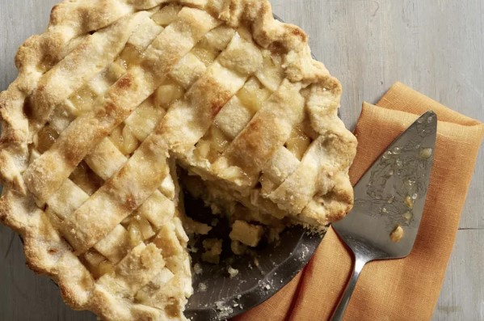

Granny's Apple Pie

If you're looking for the best apple pie recipe of all time, well, you've come to the right place.
Give it a try and learn what all the fuzz is about!
Ingredients
- Apples: 8 small Granny Smith apples
- Butter and flour: a paste filling cooked with butter and all-purpose flour
- Sugars: A blend of white and brown sugar creates the perfect sweet flavor
- Pie crust: Use a store-bought double crust pie pastry
How to make a delicious Apple Pie
- Make the filling: on the stove, make a paste with flour and butter. Add the sugar and water and bring it to a boil. Simmer, then remove from heat.
- Assemble the pie: Press one crust into a pie plate. Place the sliced apples on the bottom crust. Use the top crust to make a lattice crust according to the recipe. Pour the butter-sugar mixture over it.
- Bake the pie: Bake the pie in an oven preheated to 425º F for 15 minutes, then you'll reduce the temperature to 350º F and continue baking for 35-45 minutes or until the apples are soft and the crust is golden brown.